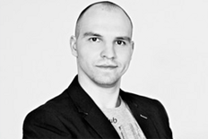

Ru
En
8 (812) 490-50-99
8 (921) 434-53-11
Санкт-Петербург, ул. Тамбовская 13
Схема проезда
Головешко Сергей Андреевич
Врач ортопед-хирург-имплантолог
 Время приема доктора Головешко По будням 9:00—20:00 Чтобы записаться на прием, нажмите на кнопку и наш менеджер перезвонит Вам Записаться на прием- Доктор Головешко является выпускником Санкт-Петербургского Государственного Медицинского Университета им.ак. И.П.Павлова, диплома врача-стоматолога. (2004г)
- Интернатура по курсу общей стоматологии на базе Медицинской Академии Последипломного Образования с присвоением сертификата специалиста и квалификации врача-стоматолога.
- Ординатура по курсу ортопедическая стоматология на базе Медицинской Академии Последипломного Образования.
- Имеет второе высшее образование, которое получил в Высшей Экономической Школе. Диплом: менеджмент организации, менеджмент в здравоохранении. Полученные знания позволяют Сергею Андреевичу создавать все условия для комфортного прибывания пациентов в клинике. Лечение с душой.
- Специализация по курсу хирургическая стоматология.
- Профессиональная переподготовка по хирургической стоматологии в МГМСУ. Первичная специализация по стоматологической имплантологии в клинике реконструктивно-восстановительной и пластической хирургии МГМСУ.
- Сертификационные курсы по гнатологии Михаила Антоника. Функциональный анализ зубочелюстной системы. Окклюзия и патология окклюзии. Артикулятор. Сплинт-терапия. Восковое моделирование, нормализация окклюзии.
- С 2004г участник различных стоматологических курсов по усовершенствованию, симпозиумов и конгрессов по ортопедической и хирургической стоматологии, проводимых, как в России, так и за рубежом (США, Германия, Швеция, Япония). Прошел курсы по теме «Эстетическая стоматология».
- В своей практической деятельности Сергей Андреевич уделяет особое внимание сложно-челюстному протезированию и имплантации зубов. Использование техник щадящего препарирования. Воссоздание улыбки с помощью виниров.
- Доктор Головешко установил более 1000 имплантатов. Владеет современными методиками имплантации и наращивания кости при ее недостаточном объеме.
- Свободное время посвящает активному отдыху, спорту и путешествиям.
- Сертификаты и стажировки
-
- Международная стоматологическая выставка Tokyo, Japan.
- Мастерство фотографирования. Основы фотографии в стоматологии, подбор фототехники, протокол фотографирования на стоматологическом приеме, художественная фотография в практике врача-стоматолога Шумаков Максим
- Продвинутый курс по коффердаму. Планирование комплексного лечения, адгезивная техника, пародонтологические аспекты и работа с увеличением (микроскоп) Рузанов Дмитрий
- Мастерство протезирования Бабуров А.В.
- Clinical aspects of implant treatment plans in the complex prosthodontic treatmen Dr. Rami Balabanovsky
- США. The 23rd International Symposium on Ceramics Presented by Quintessence Publishing Co. Inc. in San Diego, CA
- Продвинутый курс по имплантации и костной пластике" Хабиев К.Н.